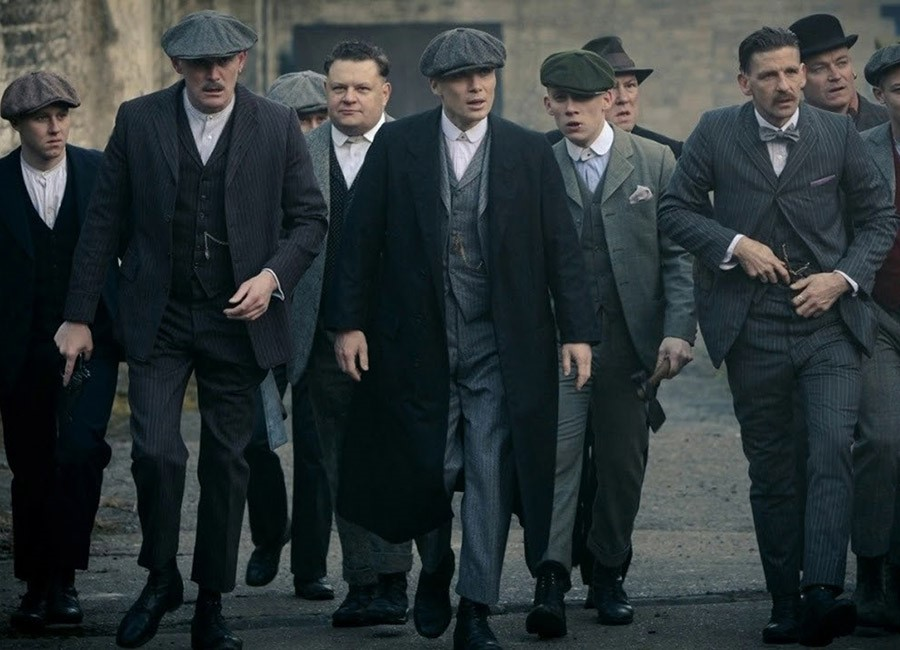
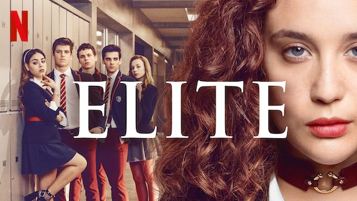
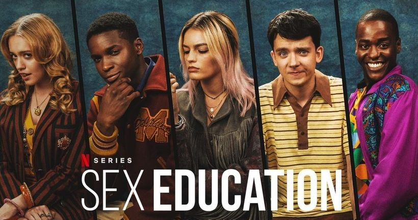
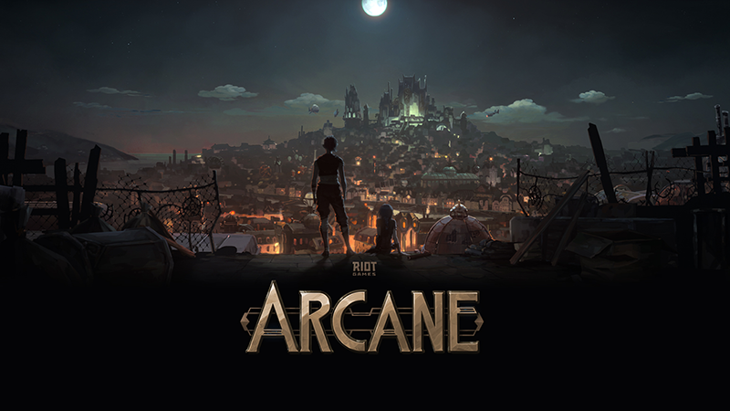

Ming Phạm
Những show đáng xem nhất Netflix tháng 12/2021
Chắc hẳn rất nhiều bạn đọc cũng giống như tôi, đã trót yêu môn nghệ thuật thứ 7. Với tôi, phim không chỉ là một hình thức giải trí, nó còn là một phương tiện để học tập, là một nơi cho tôi cái nhìn rộng hơn về thế giới bên ngoài. Nếu các bạn đang chán nản trong tình cảnh nơi nơi đều đóng cửa do dịch bệnh như hiện nay thì ngồi ở nhà và thưởng thức các bộ phim hay là một giải pháp không tồi. Trong bài viết này tôi sẽ gợi ý cho các bạn một vài show mà theo tôi là rất đáng để bỏ thời gian ra xem. Lưu ý rằng thứ tự của các bộ phim là ngẫu nhiên vì mỗi tác phẩm đều có cái hay và đặc sắc riêng của nó.
1. Peaky Blinder (Bóng ma Anh Quốc)

Để mở đầu cho danh sách, chúng ta hãy nói về Peaky Blinder. Bộ phim xoay quanh gia tộc mafia Shelby ở Birmingham, Anh Quốc những năm sau thế chiến thứ nhất. Nhân vật chính Thomas Shelby thủ vai bởi Cillian Murphy thật sự để lại quá nhiều ấn tượng cho khán giả và góp công rất lớn cho sự thành công của series này.

Nếu bạn yêu thích những phân cảnh truy đuổi nghẹt thở hay những pha đấu súng căng thẳng thì Peaky Blinder là một lựa chọn không tồi. Bên cạnh đó, trang phục của các nhân vật cũng là một điểm nhấn không thể bỏ qua. Đó là những bộ suit lịch lãm, toát lên vẻ quý tộc nhưng vẫn có chút gì đó bụi bặm của những gã mafia. Chắc hẳn rất nhiều bạn nam cũng như tôi, vì mê đắm thời trang của phim mà đã dần dần thay đổi phong cách ăn mặc của mình. Tôi nhớ có đêm mình đã thức đến tới 2 giờ chỉ bởi quá say mê sự manly của những tên tội phạm trong phim.
Với kịch bản hay và cuốn hút, nghệ thuật dựng bối cảnh và tạo hình nhân vật độc đáo kết hợp với việc sử dụng âm nhạc hợp lí, Peaky Blinder sẽ là một bộ phim mà bạn rất nên bỏ thời gian ra để trải nghiệm.
2. Elite (Ưu tú)
Tiếp theo trong danh sách là một bộ phim đến từ Tây Ban Nha. Elite thực sự là một kiệt tác trong thể loại trinh thám, góp phần đưa điện ảnh Tây Ban Nha ngày càng lớn mạnh hơn. Phim lấy trung tâm là một nhóm học sinh trong một trường cấp 3, và mỗi phần phim sẽ là quá trình phá các vụ án có liên quan đến nhau xảy ra giữa các học sinh này. Đặc biệt, xuyên suốt bộ phim có rất nhiều plot twist, hứa hẹn sẽ mang lại rất nhiều kịch tính và bất ngờ cho khán giả. Một lưu ý nhỏ là series này chứa rất nhiều phân cảnh 18+, bạn đọc nên cân nhắc trước khi xem. Tuy nhiên, nếu bạn yêu thích sự kịch tính của thể loại trinh thám, chắc chắn bộ phim sẽ khiến bạn phải nín thở trước khi một tình tiết dần được hé lộ.
3. Sex Education (Giáo dục giới tính)
Tiếp theo cho phép tôi giới thiệu đến các bạn Sex Education, một bộ phim của Anh. Series nói về những câu chuyện dở khóc dở cười xảy ra tại Moordale Highschool với hai nhân vật chính là Otis Milburn và Maeve Wiley. Bộ phim thuộc thể loại comedy, chắc chắn sẽ mang lại cho bạn đọc rất nhiều sự thư giãn và tiếng cười. Nếu bạn thực sự muốn một bộ phim mang tính giải trí cao hơn là căng thẳng, tôi dám chắc show này sẽ là sự lựa chọn hợp lí nhất trong danh sách này. Chúng ta sẽ được đắm chìm vào thế giới của những học sinh cấp 3, chứng kiến những câu chuyện tình yêu tuổi học trò tươi đẹp hay những tình huống xử lí ngớ ngẩn của các nhân vật. Một điều đáng nói nữa, đúng như tên gọi của bộ phim, series này sẽ cung cấp cho ta rất nhiều kiến thức về giáo dục giới tính, giúp ta hiểu hơn về chính bản thân mình cũng như về đối phương.
4. Arcane
Series cuối cùng mà tôi sẽ giới thiệu trong bài viết lần này là Arcane, một sản phẩm của Riot Games. Nếu bạn là một fan trung thành của tựa game League Of Legends giống như tôi, thì chắc chắn bạn sẽ không còn xa lạ gì với các nhân vật trong phim nữa. Bộ phim chính là một phần cốt truyện của Caitlyn và Vi, hai nhân vật của trò chơi. Về nội dung thì tôi không có gì để nói vì nó quá hay và quá lôi cuốn, phù hợp ngay cả với những ai chưa từng tiếp xúc với Liên Minh Huyền Thoại. Nói về artwork thì đây cũng là một điểm nhấn đặc biệt của bộ phim, nhận được rất nhiều lời khen từ các designer nổi tiếng trên thế giới.
Tôi hi vọng thông qua bài viết trên, các bạn đã có thêm một số lựa chọn để giết thời gian trong đợt giãn cách lần này. Tôi biết sẽ có rất nhiều bạn thắc mắc rằng còn rất nhiều show hay như “Squid Game”, “Money Heist”,… đâu rồi. Tôi cũng xin trả lời rằng tôi không nhắc đến chúng là do tôi chưa có thời gian để trải nghiệm những series này ¯\_(ツ)_/¯.
Trong tương lai, nếu có thời gian xem tôi sẽ tiếp tục có những bài review về các series cũng như movie khác của Netflix để gửi đến các bạn.